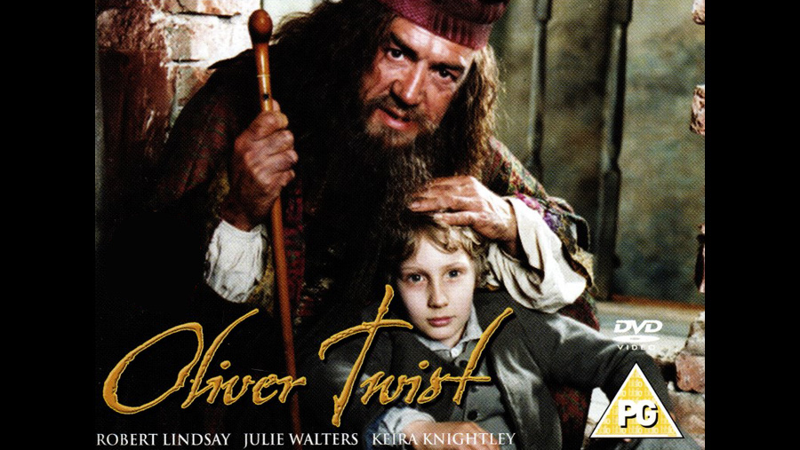

1999

CAST
Oliver Twist
-
Sam Smith
Fagin
-
Robert Lindsay
Bill Sikes
-
Andy Serkis
Nancy
-
Emily Woof
Mr. Brownlow
-
Michael Kitchen
Mr. Bumble
-
David Ross
Mrs. Mann (Widow Corney)
-
Julie Walters
Monks (Edward Leeford)
-
Marc Warren
Bet
-
Isla Fisher
Mrs. Bedwin
-
Annette Crosbie
Captain Fleming
-
Alun Armstrong
Agnes Fleming, Oliver's Mother
-
Sophia Myles
Edwin Leeford, Oliver's Father
-
Tim Dutton
Elizabeth Leeford, Edwin's Wife
-
Lindsay Duncan
Rose Maylie (Fleming), Oliver's Aunt
-
Keira Knightley
Doctor Losberne
-
David Bark-Jones
Mr. Sowerberry, undertaker
-
Roger Lloyd-Pack
Charley Bates
-
Roland Manookian
CREATIVE TEAM
Director
-
Renny Rye
Screenplay
-
Alan Bleasdale
CONTROVERSY
The adaptation, by Alan Bleasdale, attracted controversy, particularly for the decision to begin with two hours of backstory (much of it invented by Bleasdale) before reaching the plot of the novel. Furthermore, Bleasdale altered well-known sections of the novel, so that although the basic idea is the same, almost every detail is changed enough so that the miniseries plays like an original story, not an adaptation. Monks, who is made an out-and-out murderer in this miniseries (he kills his father), is nevertheless changed from a completely irredeemable and evil villain to someone who reforms to the point of getting married and starting a family.